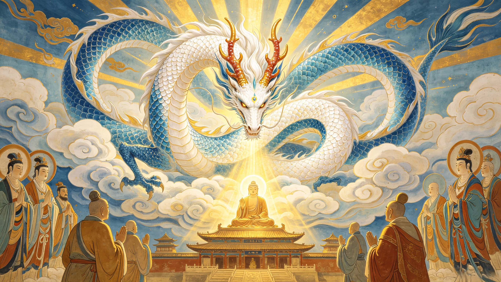

The Legacy
At Thunderclap Monastery, the Buddha spoke his name. After fourteen years of silence — after carrying the weight of the pilgrimage on his back without a single word — Ao Lie was elevated to Naga Prince. The dragon who had been reduced to a beast of burden became a celestial protector of the Dharma. His story continues to resonate across centuries.
The pilgrims knelt before the Buddha on Spirit Mountain. One by one, they received their new titles and honors. Sun Wukong became the Victorious Fighting Buddha. Tang Sanzang became the Sandalwood Merit Buddha. Zhu Bajie became the Cleaner of the Altar. Sha Wujing became the Golden Arhat. And then the Buddha looked at the white horse standing silently behind them — the one no one had counted, the one who had never spoken, the one who had walked every single step of the journey with a mortal monk on his back.
The Buddha's decree: "White Dragon Horse, you are the son of Ao Run, the Dragon King of the Western Sea. You violated your father's law by burning the imperial pearl and were sentenced to death. But you have carried the holy monk on your back throughout this journey, climbing mountains and fording rivers without complaint. For this, I elevate you to the rank of Naga Prince among the Eight Classes of Dragon Deities."
The transformation was immediate and spectacular. The white horse's body shimmered, stretched, and reshaped. Scales of pearl-white and ocean-blue emerged from beneath the equine coat. Horns of polished coral spiraled from his head. The dragon prince Ao Lie — but elevated, sanctified, transformed — stood before the assembled multitude. He was no longer the horse. He was no longer the condemned criminal. He was a Naga Prince — one of the Eight Classes of celestial dragon deities who guard the Dharma and protect Buddhist teachings for all eternity.
In Buddhist cosmology, the Naga (龍) are not ordinary dragons. They are enlightened dragon-spirits who serve as guardians of the Dharma — the Buddha's teachings. They protect sutras, safeguard temples, and command the rains that nourish the world. The Eight Classes of Dragon Deities rank among the highest orders of celestial beings in the Buddhist cosmos — higher, in fact, than the Jade Emperor's terrestrial administration, which governs the Chinese folk pantheon.
To be named a Naga Prince was to be elevated above even the Four Dragon Kings — including Ao Lie's own father, Ao Run, who had been legally required to condemn him. The son who had disgraced the Dragon King of the Western Sea had become a being his father must now bow before. This is the ultimate narrative reversal in Journey to the West: the lowest of the pilgrims — the one stripped of name, form, and voice — rose higher than almost any of them.
The beloved TV series gave the White Dragon Horse a prominent role, with a dedicated episode for his recruitment. Actor Wang Bozhao's portrayal of Ao Lie's human form became iconic in Chinese popular culture.
The White Dragon Horse appears as a character in Journey to the West operas, often symbolized by an actor in white with flowing movements that suggest both equine grace and dragon power beneath.
The 2024 game Black Myth: Wukong features the White Dragon Horse as a significant character — a dragon who has waited centuries for the monk's return, guarding the memory of the pilgrimage.
In Chinese culture, the concept of 龙马 (lóng mǎ) — the dragon-horse — is a powerful symbol. It represents the union of opposite qualities: dragon (power, transcendence, the celestial) and horse (service, endurance, the earthly). The White Dragon Horse embodies this union perfectly. He is the dragon who chose to be a horse. The celestial being who accepted the lowest form of service. And in that choice — that willing descent from prince to beast — he achieved a spiritual elevation that pure power could never grant.
The dragon-horse appears elsewhere in Chinese mythology, most famously as the Longma that emerged from the Yellow River bearing the trigrams that inspired the I Ching. But Ao Lie's dragon-horse is unique: he is not a hybrid creature but a being who moved between forms — dragon to horse and back to dragon — with each transformation marking a stage of spiritual development. Dragon → Horse → Naga Prince. Pride → Humility → Transcendence.
Beyond the 1986 CCTV series, the White Dragon Horse continues to appear in contemporary adaptations. The 2011 television series, the animated features, the comics and manhua — each generation rediscovers the silent dragon prince. In some retellings, he is given more dialogue, more backstory, more opportunities to shine. But the most powerful portrayals remain the ones that honor his essential nature: the quiet one, the steadfast one, the one whose silence spoke louder than words.
In a culture that increasingly values noise — social media, constant self-promotion, the endless assertion of identity — the White Dragon Horse offers a counter-narrative. You do not have to be the loudest to be the strongest. You do not have to speak to be heard. You do not have to be the hero to be essential. Sometimes the most important person in the story is the one who simply shows up, every day, and carries the weight.
The White Dragon Horse's story has parallels across world mythology that illuminate its unique power. In Greek myth, Pegasus is a winged horse born from Medusa's blood — a creature of power and freedom. But Pegasus serves heroes; he does not become one. In Norse myth, Sleipnir is Odin's eight-legged steed — a horse of supernatural capability. But Sleipnir is a mount, not a pilgrim. Ao Lie is both: the mount and the pilgrim. The servant and the saint. His story transcends the usual categories of hero and helper, active and passive, powerful and powerless. He is all of them at once. And that is why his story endures.
He was elevated to Naga Prince (八部天龍), one of the Eight Classes of Dragon Deities in Buddhist cosmology. This rank places him among the celestial protectors of the Dharma — a position higher than even the Four Dragon Kings who govern the world's oceans.
Yes — but not the same dragon he was before. He was transformed into a Naga Prince, a sanctified celestial dragon. He regained his draconic form but transcended his former identity. The arrogant prince was gone; in his place stood an enlightened guardian of the Buddhist faith.
The 1986 adaptation gave Ao Lie a dedicated recruitment episode and several moments of human-form interaction. Actor Wang Bozhao portrayed him as dignified, remorseful, and quietly devoted — a portrayal that deeply influenced how Chinese audiences understand the character.
Yes. In the 2024 game Black Myth: Wukong, the White Dragon Horse appears as a significant NPC who has waited centuries for Tang Sanzang's return, guarding the memory of the pilgrimage. His portrayal expands on the character's enduring loyalty and silent devotion.
He embodies the dragon-horse (龙马) symbol — the union of celestial power with earthly service. His story represents silent devotion, the dignity of humble service, and the Buddhist principle that enlightenment can be achieved not through spectacular deeds but through simple, steadfast dedication.
Dive Deeper